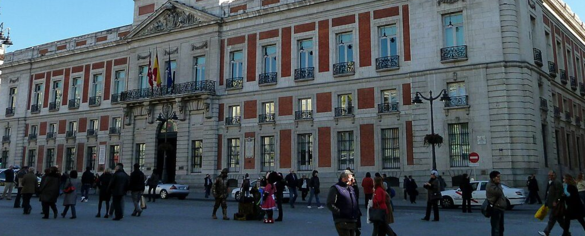

Comunidad de madrid
VIDEOS
La Comunidad de Madrid es un lugar vibrante y lleno de vida, con una rica oferta de actividades culturales, turísticas y recreativas. Desde sus museos emblemáticos, como el Museo del Prado y el Reina Sofía, hasta sus parques y jardines, como el Retiro y la Casa de Campo, Madrid ofrece una experiencia única para cada visitante. Además, la ciudad cuenta con una variada oferta gastronómica, con tapas tradicionales, mercados de productos frescos y una excelente cocina internacional.
Las calles de Madrid son un reflejo de su historia y modernidad, con barrios como Malasaña, Chueca o La Latina, que invitan a explorar su arquitectura, tiendas y bares. La vida nocturna madrileña es conocida por ser una de las más animadas de Europa, con una gran variedad de locales para disfrutar hasta altas horas de la madrugada.
Además, la Comunidad de Madrid ofrece una excelente conectividad con otros lugares de interés, como el Palacio Real, el Santiago Bernabéu, y las sierras cercanas, donde se pueden practicar deportes al aire libre, como senderismo y esquí. Ya sea en la capital o en sus alrededores, Madrid ofrece experiencias inolvidables para todo tipo de viajeros.